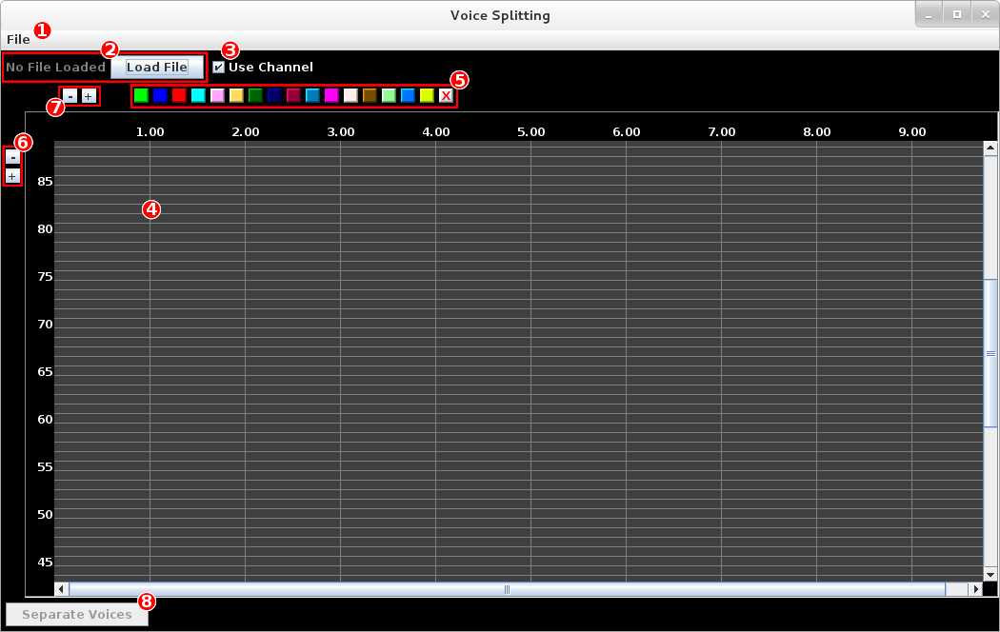

Voice Splitting GUI Readme
This page contains a readme and instructions about how to run the Voice Splitting project from a GUI, as well as an overview of some of the features of the GUI. For a more general readme, including instructions on how to run the Voice Splitting project from the command line, go to the main Main GitHub repository instead.
1. Running the Program
To run the program, simply use the command
java -cp bin voicesplitting.gui.VoiceSplittingGUIThe following window should pop up.
| Label | Function |
|---|---|
File menu with three options:
|
|
| 2 | A text box which displays the name of the currently loaded MIDI file, as well as a Load File button. |
| 3 | A checkbox to toggle whether to use channels (checked, default) or tracks (unchecked) as gold standard voice assignments (and color-code the notes accordingly). This checkbox is only taken into account when a file is first loaded, so a file must be reloaded for a change to be taken into account for coloring or accuracy calculation. |
| 4 | The main grid where notes are displayed. The notes are color-coded according to the setting of the use channel checkbox (#3). The vertical axis represents the notes' pitches, and the horizontal axis represents time and is measured in seconds, where 0 is the beginning of the loaded MIDI performance. |
| 5 | Solo buttons, if any of them are active (depressed), only those notes which correspond to a channel (or track, depending on the use channel checkbox) which is depressed will be displayed. This is useful when notes of different voices overlap. The button on the far right with the red X will de-activate all of the solo buttons. |
| 6 | Zoom buttons for zooming the main grid in (+) or out (-) vertically. |
| 7 | Zoom buttons for zooming the main grid in (+) or out (-) horizontally. |
| 8 | The action button which separates the currently loaded MIDI data into voices (or unseparates, if the notes have already been separated). |
2. Loading a MIDI File
When loading a MIDI file, it is important to that the use channel checkbox (#3 above) is set correctly. By default, MIDI channels are used as gold standard voices for the notes, but some MIDI files use tracks instead to label voices. If yours use tracks, make sure the box is unchecked. Otherwise, you will have to reload the file to get correct note coloring and accuracy reporting.
You can load a MIDI file either by clicking the Load File button, or by selecting File->
Load... from the menu bar at the top of the window.
3. Voice Splitting
3.1. Setting the Parameters
You can set the voice splitting parameters by selecting File->Preferences..., which causes
the following popup window to appear.
Here, any of the 6 parameters can be changed manually using the text fields (any illegal arguments will be reset to
their original value), or the default settings can be reloaded with the Default button. Parameter settings
will be saved by exiting with the OK button.
3.2. Voice Splitting
Voice splitting can be performed on any loaded MIDI data by clicking the Separate Voices button at the
bottom of the window. Once the separation has been completed, the notes' borders will be color coded into the voices
to which they've been assigned, the Separate Voices button's text will change to Undo Voice Separation
(and can now be used to undo the separation), and a popup will appear displaying the F1-measure of the resulting split.
NOTE: If this value seems unusually low, you may be using MIDI files which use tracks rather than channels (or vice versa) as discussed in section 2 above.